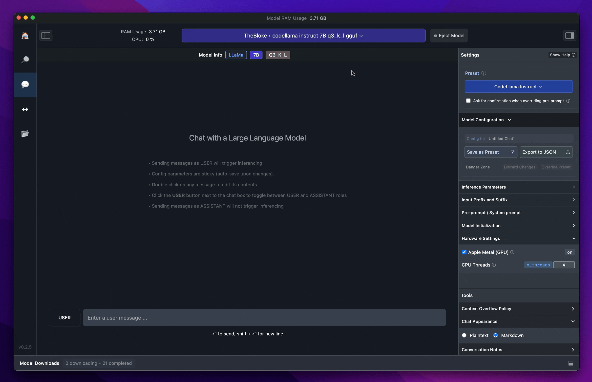

GPT modelleri
FEF3001 Yapay zekaya giriş - Ders1 - TR
GPT modelleri
GPT1, GPT2 ve GPT3, ChatGPT’den birkaç yıl önce piyasaya sürüldü ve cümleleri tamamlama yeteneğine sahipti. Daha fazla bilgi için “ChatGPT Nasıl Çalışır?” sitesini ziyaret edin. ChatGPT’nin piyasaya sürülmesinden sonra, büyük dil modelleri “konuşma yeteneği” kazandı.
Lütfen OpenAI Playground tamamlama sitesini ziyaret edin ve model olarak “gpt-3.5-turbo”yu seçin. Tamamlanmamış bir cümle yazın ve ardından Gönder düğmesine basın.

Modelin cümlenizi tamamladığını göreceksiniz. Sağ menüdeki “Olasılıkları göster” seçeneğini açarsanız, GPT’nin nasıl çalıştığına dair bir fikir edinebilirsiniz.
Cümleyi tamamlayıp kelimelerin üzerine geldiğinizde, modelin belirli olasılıklarla seçebileceği birçok kelime olduğunu göreceksiniz. Bu örnekte, “my” kelimesi Today is ifadesinden sonra 4. en olası kelimedir ve “birthday” kelimesi Today is my ifadesinden sonra en olası kelimedir.

GPT modellerinin temel ayarlarından biri sıcaklık değeridir. Sıcaklığı azaltırsanız, model en olası kelimeleri seçecektir. Sıcaklık yüksekse, model düşük olasılıklı kelimeleri seçecektir, bu da yaratıcı ve çeşitli çıktılar sağlayacaktır.
Sıcaklığı sıfıra düşürürseniz, çıktı her zaman aynı olacaktır.

ChatGPT - artık kod yazmaya gerek yok mu?
ChatGPT, Aralık 2022’de piyasaya sürüldü ve çevrimiçi dünyayı kasıp kavurdu. Hakkında birçok blog yazısı ve YouTube videosu var. Bu nedenle Google endişeli ve iş gücünü yapay zeka araştırmalarına kaydırıyor, bazı insanlar ise chatGPT’nin yazılım mühendisliğini sona erdireceğinden endişe ediyor.
Şimdi ChatGPT dünyasına dalalım. ChatGPT sitesinde sorgular yapmak için OpenAI’da bir hesaba ihtiyacınız olduğunu unutmayın.
Dersimiz sırasında biraz kodlama yaptıysanız, muhtemelen bir çözüm için çevrimiçi arama yaptınız veya hatta bir hata mesajı için sorun giderme yaptınız. Bu durumda büyük olasılıkla geliştiricilerin/programcıların yardım istediği StackOverflow sitesine ulaştınız.
Önceki derslerimizde, en hızlı asal sayıyı aradık. Google’a “fastest prime number function in python” yazarsanız, şöyle bir şey elde edersiniz:

Fark ettiğiniz gibi, StackOverflow’dan birçok sonuç var. Ancak; * Sonuçlardaki tarihleri kontrol ederseniz, bazıları 2011’e kadar uzanıyor. O sayfada, muhtemelen başarısız olacak Python 2’den bir örnek kod görebilirsiniz. * Bazı sonuçlar “N’ye kadar olan asal sayılar” üzerine odaklanırken, diğerleri asallığı kontrol ediyor. Yani, sonuçlar sizin için özelleştirilmemiş. * Ayrıca, başka bir sayfada sadece kopyalayıp yapıştırırsanız hata verecek gereksiz kodla sarılmış bir örnek kod görebilirsiniz.
ChatGPT bizim için kod yazıyor
Hadi ChatGPT’den Python’da hızlı bir asal sayı fonksiyonu isteyelim

Az önce ne olduğunu gördünüz mü! Bize özel hazırlanmış bir kod sağladı ve kodun parçalarını da açıkladı. Kodun dersimiz sırasında öğrendiğimiz püf noktaları içerdiğini fark ettiniz mi: * erken durma: bir koşul karşılanırsa, hemen True veya False döndür * N’ye kadar kontrol etmek yerine, \(\sqrt{N}\)’e kadar olan sayıları kontrol etmeliyiz (Python’da n 0.5**)
Konuşmaya devam edebilirsiniz. Hadi memoization isteyelim.


Hadi kodu alalım ve burada test edelim:
def is_prime(n, memo={}):
if n in memo:
return memo[n]
if n in (2, 3):
result = True
elif n == 1 or n % 2 == 0:
result = False
else:
result = True
for i in range(3, int(n ** 0.5) + 1, 2):
if n % i == 0:
result = False
break
memo[n] = result
return result# is_prime(100000000003)Bu notu yazdığım sırada (Ocak 2023) chatGPT’nin tam olarak doğru olmayan sonuçlar verdiği biliniyordu!
Bu nedenle, chatGPT’den aldığınız kodu veya bilgiyi kontrol etmeden veya doğrulamadan olduğu gibi kullanmamaya dikkat ediniz.
ChatGPT kodu düzeltebilir veya değiştirebilir
Elinizde bir kod parçası var ve istediğiniz gibi çalışmıyor mu? O zaman ChatGPT’den kodu düzeltmesini isteyebilirsiniz.
Hatalı bir kod verelim ve chatGPT’den hata ayıklamasını isteyelim:

Demek ki ChatGPT kodu düzeltebiliyor! Bu arada, o örneği hazırlamak için ChatGPT’yi kullandığımı biliyor muydunuz? ;)


Bu programlamanın sonu mu?
“Bir dönem boyunca Python öğrendik ama şimdi ChatGPT var, hiç kod öğrenmeye gerek yok!” diye düşünebilirsiniz. Benzer endişeleri araştıran çevrimiçi içerikler bulabilirsiniz. Ancak daha makul yaklaşım, “AI araçları geliştiricilerin hızını ve verimliliğini artıracak ve ayrıca yeni dillere giriş engellerini azaltacak” şeklindedir.
Aşağıdaki bölüm Github Copilot’un sayfasından alınmıştır:
ChatGPT’yi gösterdiğiniz için teşekkürler, artık ödevlerimi kolayca hazırlayabilirim!
ChatGPT’nin yeteneklerini görmek, yanlış kullanım hakkında bazı ipuçları verebilir. Öncelikle, bir ödev sizin bir kavramı öğrenmeniz içindir (gitar çalma benzetmesini hatırlayın?) bu nedenle AI destekli intihal yapmak hala bir intihaldir ve sizin açınızdan bir kayıptır. (lütfen intihalin olumsuz etkileri için 00-academic-integrity.ipynb dosyasını da kontrol edin)
İkincisi, OpenAI ve diğerleri ChatGPT çıktısına kolayca fark edilebilecek filigranlar eklemek için araçlar ve yöntemler üzerinde çalışıyor.
Bu yüzden lütfen bu araçtan ilham alın, öğrenmenizi geliştirmek için kullanın ama intihal için kullanmayın.
Büyük Dil Modelleri
ChatGPT ve ötesi
Kapalı ve Açık modeller
Şu anda, her biri eğitilmek için yüz milyonlarca dolar harcanan ve büyük şirketler tarafından geliştirilen birkaç kapalı kaynaklı büyük dil modeli var: * GPT3.5 (ChatGPT) ve GPT4 OpenAI tarafından * PaLM ve Bard Google tarafından * Claude Anthropics tarafından
OpenAI modellerine erişim
Bazı büyük dil modelleri özel mülkiyettedir. ChatGPT’ye ücretsiz erişiminiz var. OpenAI web sitesi üzerinden GPT4’e ücretli erişim var.
Ayrıca Microsoft CoPilot Android Uygulaması aracılığıyla GPT4 ve DALL-E 3’e erişebilirsiniz. Uygulama metin ve görüntü girişi ve çıkışına izin veriyor.

GPT4 kadar iyi LLM’ler
Claude 3.5 Sonnet by Antropic
Claude 3.5, Claude modelinin en son sürümüdür. Antropic, Claude’u üç boyutta piyasaya sürer: Haiku (en küçük), Sonnet (orta) ve Opus (en büyük). Şu anda, Claude 3.5 Sonnest en iyi LLM’dir. Genellikle Claude yaratıcı yazma konusunda iyidir, ancak son sürümüyle kodlamada da mükemmelleşmiştir. Ayrıca, Claude sağ panelde kodun önizlemesine (web tabanlı) izin verir.
Aşağıda, Claude 3.5 Sonnet’e “Lütfen HTML, CSS ve JS ile yılan oyunu yaz” komutu verildiğinde oluşturulan bir örnek yer alıyor. Oyunu gerçekten oynayabilirsiniz!

Claude ayrıca belgeleri (örneğin PDF) yüklemeye ve belge hakkında sorular sormaya izin verir.
Claude’u (bazı sınırlamalarla) ücretsiz bir hesap kaydettikten sonra https://claude.ai/chat adresinde kullanabilirsiniz.
Gemini by Google
Gemini aslında çevrimiçi arama kapasitesine sahip bir LLM’dir. Ayrıca, (Google Drive aracılığıyla) belgeler indirebilir veya sorular sormak için YouTube videolarına yönlendirebilirsiniz. Son olarak, Gemini 1 milyon belirteçlik en uzun bağlam penceresine sahiptir (bir kerede yaklaşık 10 kitap sığacaktır).
Açık kaynak modeller
ChatGPT veya GPT4’ü bilgisayarınızda yerel olarak çalıştıramazsınız (ancak API erişimine sahip olabilirsiniz).
- OpenAI model ağırlıklarını paylaşmıyor
- Ağırlıklara sahip olsanız bile, çalıştırmak için pahalı bir bilgisayara ihtiyacınız var.
Teknoloji devleri LLM’leri duvarların arkasında tuttu. Ancak, 2023 Şubat ayında Meta (eski adıyla Facebook) LLAMA modelini yayınladı. Bu, açık kaynak modellerinin yayınlanmasını tetikledi. İlk dil modelleri büyüktü, ancak daha sonra daha küçük dil modelleri yayınlandı. Bu dil modelleri bir dizüstü bilgisayarda, yerel olarak çalıştırılabilir!
Lütfen açık kaynak LLM liderlik tablosunu kontrol edin. Bu metni yazdığım sırada, Mistral.ai’den gelen modeller çok umut vericiydi ve Mixtral modeli ChatGPT kadar iyi olarak değerlendirildi, ancak çok daha küçük.
LLAMA ve Mistral modellerini Perplexity AI sitesinde test edebilirsiniz.
Perplexity AI hakkında (https://www.perplexity.ai/): Perplexity AI, kullanıcıların doğal dilde sorular sormasına ve doğru ve kapsamlı yanıtlar almasına olanak tanıyan sohbet robotu tarzında bir arama motorudur. Platform, akademik veritabanları, haber kaynakları, YouTube, Reddit ve daha fazlası dahil olmak üzere web üzerindeki birden fazla kaynaktan bilgi toplamak için AI teknolojisini kullanır. Ardından Perplexity AI, kullanıcılara kaynak alıntıları içeren bir özet sunar, böylece bilgiyi doğrulamalarına ve belirli bir konuya daha derinlemesine dalmalarına olanak tanır. Perplexity AI, araştırmacılar, yazarlar, sanatçılar, müzisyenler ve programcılar gibi çeşitli meslekler için soruları yanıtlama, metin oluşturma, yaratıcı içerik yazma ve metin özetleme gibi birden çok görevde yardımcı olabilen çok yönlü bir araçtır. Perplexity AI’nin avantajları: * Karmaşık sorulara hızlı ve kapsamlı yanıtlar sağlar * Kullanıcıların yeni şeyler öğrenmesine ve farklı bakış açılarını keşfetmesine yardımcı olur * Bilginin kaynaklarını göstererek kullanıcıların eleştirel düşünme ve araştırma becerilerini geliştirir
Modelleri lokal olarak çalıştırma
Geliştiriciler model ağırlıklarını paylaştığı için, modelleri indirip yerel olarak çalıştırmak mümkün. Çeşitli boyutlarda modeller var. 7B (7 milyar) modeller yaklaşık 4Gb bellek gerektiriyor, bu yüzden onları dizüstü bilgisayarınızda çalıştırabilirsiniz.
Modelleri, Python için PyTorch ve bazı diğer kütüphaneleri kurarak ve ardından biraz Python kodu yazarak çalıştırabilirsiniz. Ya da Ollama’yı kurabilir ve ardından onunla uyumlu herhangi bir modeli çalıştırabilirsiniz.
Bir modeli yerel olarak çalıştırmanın avantajları: 1. Daha Az Sansür 2. Daha İyi Veri Gizliliği 3. Çevrimdışı Kullanım 4. Maliyet Tasarrufu 5. Daha İyi Özelleştirme
Bir modeli yerel olarak çalıştırmanın dezavantajları: 1. Kaynak Yoğun 2. Daha Yavaş Yanıtlar ve Daha Düşük Performans 3. Karmaşık Kurulum
Jupyter notebook veya Google Colab kullanarak lokal olarak model çalıştırma
Aslında LLM modellerini Jupyter notebook’larında çalıştırabilirsiniz. Ancak bu süreç, birçok Python paketini kurmanızı, model ağırlıklarını indirmenizi ve ardından modele soru sormak ve yanıtı bir sözlükte yakalamak için biraz Python kodu yazmanızı gerektirecektir. “Sohbet benzeri” deneyim için bazı çözümler olsa da, deneyim daha çok “tek seferlik soru ve cevap” gibidir.
Lütfen Google’ın bir Jupyter notebook ortamında modeli çalıştırmak için GPU (veya TPU) sağladığı Google Colab’daki süreci anlatan YouTube videosunu kontrol edin.
Ollama ile lokal olarak model çalıştırma

Özelleştirilmiş modeller hakkında bir fikir edinmek için lütfen modeller listesi sayfasını ziyaret edin. Ollama ile, bu modellerden herhangi birini indirebilir ve kullanabilirsiniz.
Terminalde, mevcut modelleri listeleyelim
$ ollama list
NAME ID SIZE MODIFIED
deepseek-coder:6.7b 72be2442d736 3.8 GB 5 weeks ago
neural-chat:latest 73940af9fe02 4.1 GB 5 weeks ago
orca2:7b ea98cc422de3 3.8 GB 5 weeks ago
phi:latest c651b7a89d73 1.6 GB 14 hours ago
solar:latest 059fdabbe6e6 6.1 GB 2 hours ago
stablelm-zephyr:3b 7c596e78b1fc 1.6 GB 3 weeks agoMicrosoft tarafından geliştirilen Phi-2’yi çalıştıralım. İşte Phi-2 hakkında bilgi:
2,7 milyar parametreli bir dil modeli olan Phi-2, olağanüstü akıl yürütme ve dil anlama yetenekleri sergiliyor ve 13 milyar parametreden daha az olan temel dil modelleri arasında en son teknoloji performansı gösteriyor. Karmaşık kıyaslamalarda Phi-2, model ölçeklendirme ve eğitim verisi kürasyon konusundaki yeni yenilikler sayesinde 25 kat daha büyük modellere eşdeğer veya daha iyi performans gösteriyor.
$ ollama run phi:latest
>>> Gökyüzü neden mavi?
Gökyüzü, Rayleigh saçılması adı verilen bir fenomen nedeniyle mavi görünür. Güneş ışığı Dünya'nın atmosferine girdiğinde, oksijen ve azot atomları gibi havadaki moleküller ve küçük parçacıklarla çarpışır. Bu çarpışmalar, ışığın daha kısa dalga boylarının (mavi) daha uzun dalga boylarından (kırmızı, turuncu, sarı, yeşil ve mor) daha fazla saçılmasına neden olur.
Sonuç olarak, gözlerimiz saçılan mavi ışığı baskın olarak algılar ve bu nedenle gökyüzü bize mavi görünür.Gördüğünüz gibi, soruları cevaplayabilen, kodlama konusunda yardımcı olabilen küçük bir model yerel olarak çalıştırılabilir.
Kullanıcı arayüzü ile lokal olarak model çalıştırma
Ollama Web UI

LLM Studio
LM Studio’yu kurabilir ve ardından kullanıcı arayüzü ile yerel modellerle etkileşime geçebilirsiniz

LLM’ler ile Kodlama
Github CoPilot
Ücretsiz Github CoPilot alternatifi
Cody, Sourcegraph’in AI kodlama asistanıdır ve sizi 10x geliştirici yapacak başka hiçbir asistanın sahip olmadığı birkaç özelliğe sahiptir. Buradan inceleyebilirsiniz: https://sourcegraph.com/cody
Açık kaynak lokal alternatifler
Daha fazla bilgi için lütfen https://tabby.tabbyml.com/ adresini ziyaret edin

Prompt mühendisliği
Daha iyi sonuçlar için LLM’lere dikkatli bir şekilde hazırlanmış promptlar sağlamalıyız. OpenAI’nin Prompt mühendisliği hakkındaki dokümantasyonu daha iyi promptlar için püf noktaları ve ipuçları sağlıyor. Çeşitli örnekler için lütfen Prompt Örnekleri sayfasını ziyaret edin.
https://prompts.chat/ sayfasında, ChatGPT’nin Excel veya Linux terminali gibi davranması istenen aşırı örnekler var
İnce ayar (Fine-tuning)
Bir Dil Modelini (LLM) ince ayarlamak, önceden eğitilmiş bir dil modelini alıp daha küçük bir veri setiyle belirli bir görev veya alan üzerinde daha fazla eğitme sürecini ifade eder. İnce ayar, önceden eğitilmiş modeli daha özelleştirilmiş bir göreve veya alana uyarlamanıza olanak tanır ve başlangıç eğitimi sırasında kazandığı bilgilerden yararlanır. Bu süreç, özellikle belirli bir dille ilgili göreviniz veya belirli bir alana ilişkin bir veri setiniz varsa ve modelin bu belirli bağlamda iyi performans göstermesini istiyorsanız özellikle faydalıdır.
İnce ayar adımları genellikle önceden eğitilmiş modeli almayı, son katmanları değiştirmeyi veya göreve özel katmanlar eklemeyi ve ardından modeli göreve özel veri setinde eğitmeyi içerir. İnce ayar, hedeflenen görevde daha iyi performansa yol açabilir, çünkü model zaten genel dil kalıplarını öğrenmiştir ve bu bilgiyi belirli görev için kullanabilir.
İnce ayar, eğittiğiniz LLM’e bağlı olarak bir GPU gerektirebilir. Ayrıca, hızla değişen alan bilginiz varsa, ince ayarın da düzenli olarak yapılması gerekir, bu da pahalı ve zahmetlidir.
Retrieval Augmented Generation (RAG)
Belgelerinizle sohbet edin
Görsel kaynağı: Tarek AbdelKhalek
Ajanlar
AI ajanları, Büyük Dil Modellerini kullanarak görevleri otonom olarak gerçekleştirmek üzere tasarlanmış çerçeveler veya varlıklardır. Bu ajanlar çevrelerini algılama, kararlar alma ve belirli hedeflere ulaşmak için eylemde bulunma yeteneğine sahiptir. “Ajan” terimi, bu varlıkların bir kullanıcı veya sistem adına, genellikle bir derece özerklikle hareket edebileceği fikrini vurgular.
- chatdev: AI kasabanızı kişiselleştirin
- crew.ai: Rol yapma, otonom AI ajanlarını orkestra etmek için çerçeve
- Microsoft Autogen: Yeni nesil büyük dil modeli uygulamalarını etkinleştirin
extras klasöründe Autogen ve CrewAI ajan çerçeveleri için örnekler bulunmaktadır
Metin Dışındaki Modlar
Google’dan Gemini ve OpenAI’dan GPT4 çok modludur. Görüntü ve metni desteklerler. Ve yakında ses, video vb. desteklemeleri bekleniyor.
Görüntü Üretimi
OpenAI’dan DALL-E 3
İstek: “arka planda istanbul şehri silüeti olan bir dna sarmalı”
Düzeltilmiş istek: “Bilim ve mimarinin buluştuğu detaylı bir illüstrasyon hayal edin. Ön planda, karanlık bir arka plan üzerinde büyütülmüş ve parlayan bir DNA sarmalı var. Bu sarmal yapı tam olarak betimlenmiş, tanıdık çift sarmal şekli muhteşem bir şekilde kıvrılıyor. Bu bilimsel görüntüyle iç içe geçmiş şekilde, arka planda İstanbul şehrinin bir silüet temsili var. Şehir silueti, kubbeli camileri ve yükselen minareleriyle muhteşem tarihi mimarisini sergiliyor. Şehir manzarası, akşamüstü gökyüzüne karşı duruyor, batan güneş binaların arkasındaki ufukta turuncu bir parıltı yaratıyor. Bu kombinasyon, bilim ve şehir güzelliğinin büyüleyici bir yan yana gelişiyle sonuçlanıyor.”
Sonuç:
Midjourney v6
Midjourney, Aralık 2023’te v6’yı duyurdu. Fotogerçekçi görüntüler üretebiliyor. Normalde, ücretsiz görüntü üretmek için Discord kanallarını kullanmanız gerekir. Ayrıca, getimg.ai kullanarak da görüntüler üretebilirsiniz. Aşağıdaki isteklerle görüntüler üretmeyi denedim:
- Çok sayıda öğrencinin olduğu moleküler biyoloji laboratuvarı.
- Beyaz kumlu güzel bir deniz kenarı ve kıyıda tropikal ağaçlar. Deniz yeşilimsi mavi görünüyor.
Sonuçlar harika:
Dezenformasyon
Deepfake veya yapay zeka tarafından üretilmiş sahte fotoğraflara dikkat edin
Sahte Trump Fotoğrafı
Sahte Papa Fotoğrafı
Video Üretimi
İstekten videoya
- RunwayML Gen-2
- Pika
- Stable Diffusion’dan Stable Video Diffusion
- GENMO
Görüntüden videoya
Müzik veya Ses Üretimi
- Elevenlabs yapay zeka ses üreticimizle metni çevrimiçi olarak ücretsiz konuşmaya dönüştürebilir